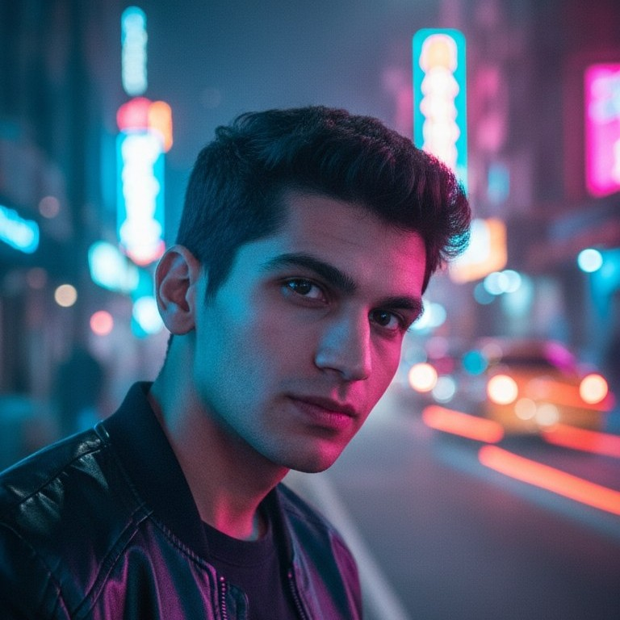

01
ویدیو
گاهی سینمایی، گاهی ساده و گاهی هم یه ایده عجیب که دلم خواسته امتحانش کنم.
من محمدم. پشت این اسم یه آدمه که مدتها دوست داشت تولید محتوا رو شروع کنه و هر بار یه دلیل برای عقبانداختنش پیدا میکرد. اینجا جاییه که بالاخره تصمیم گرفتم شروعش کنم.
هنوز خیلی چیزا رو دارم یاد میگیرم؛ و دقیقاً همین بخشش برام جذابه.

از مدتها قبل دلم میخواست محتوا بسازم. آموزش دیدم، تمرین کردم، ایده جمع کردم و کلی بار با خودم گفتم «از شنبه شروع میکنم».
مشکل این بود که همیشه منتظر یه نسخه بهتر از خودم بودم؛ یه شروع بینقص، یه ویدیوی بینقص، یه شرایط بینقص. آخرش فهمیدم این انتظار قرار نیست تموم بشه. پس تصمیم گرفتم با همین چیزی که هستم شروع کنم.
گاهی سینمایی، گاهی ساده و گاهی هم یه ایده عجیب که دلم خواسته امتحانش کنم.
گیم، حرفزدن و چیلکردن؛ بدون اینکه همهچیز زیادی جدی و رسمی باشه.
چیزایی که خودم باهاشون سروکله میزنم، تست میکنم یا ازشون چیز جدیدی یاد میگیرم.
متولد ۱۳۸۴م و دانشجوی کامپیوتر. از بچگی با کامپیوتر و تکنولوژی درگیر بودم و هنوزم بخش زیادی از وقتم با همین چیزا میگذره.
ولی چیزی که این اواخر بیشتر از خود تکنولوژی برام جذاب شده، ساختنه؛ اینکه یه ایده توی ذهنم باشه و آخرش یه چیزی واقعی ازش دربیاد.
میخوام چیزی بسازم که دیدنش چند دقیقه از روزت رو بهتر کنه؛ حتی اگه فقط یه لبخند کوچیک باشه.
همین، فعلاً هدف خوبیه.